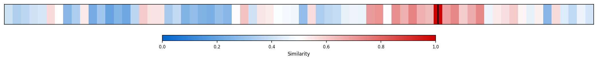
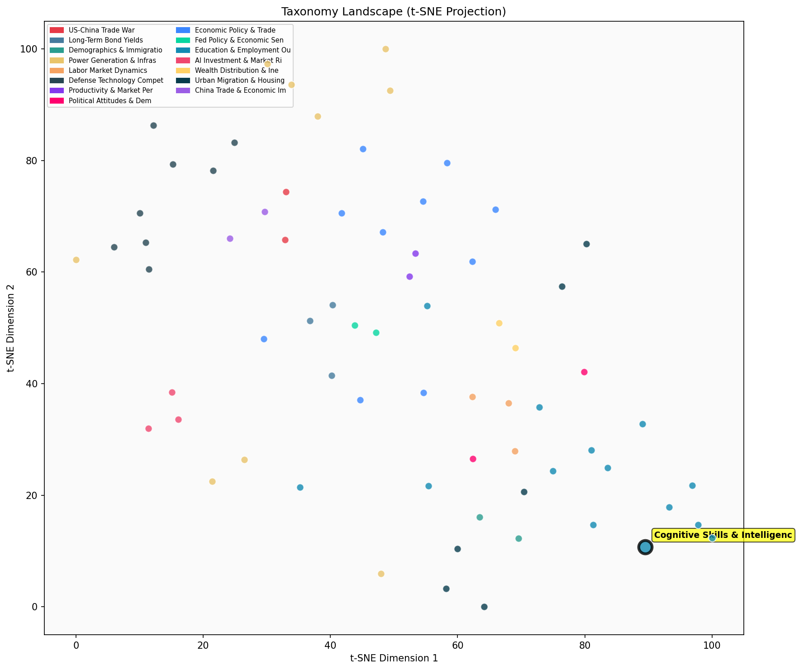

Description
This subcluster examines the direct economic returns to cognitive abilities and intelligence measures in labor markets. Articles analyze longitudinal datasets from birth cohorts, military aptitude tests, and twin studies to quantify how cognitive skills translate into wages and career outcomes. Research focuses on measurable intelligence metrics like IQ scores, general mental ability tests, and standardized assessments, exploring their predictive power for earnings across different demographics and time periods. Unlike sibling subclusters that examine institutional factors like college admissions or broad educational attainment gaps, this collection specifically isolates cognitive capability as an independent variable driving economic success, often controlling for educational credentials to identify the pure returns to mental ability.
Similarity to All 70 Subclusters
Each cell represents a subcluster. Color intensity shows similarity (blue=low, red=high). Black line marks current subcluster position.
Relationship to Primary Clusters
Average similarity to each of the 15 primary clusters. Larger area = stronger relationship to that cluster.
Taxonomy Landscape
All 70 subclusters positioned by similarity (t-SNE). Current subcluster highlighted with label. Click to enlarge.
Network Connections
Current subcluster at center, connected to related subclusters. Line thickness = similarity strength.
Most Representative Articles
-
1. Education plays a crucial role in labor earnings, with a 4-year college education yielding a 52% ear
-
2. Research by @slatestarcodex suggests genes linked to mental illness may enhance non-cognitive skills
-
3. Education boosts intelligence by 1-5 IQ points per year, according to a meta-analysis of 142 effect
-
4. A 1SD increase in parental environment quality boosts IQ by ~2.83 points, highlighting the economic
-
5. Analysis of a General Mental Ability (GMA) test given to Norwegian soldiers since 1954 suggest that
Edge Cases (Boundary Articles)
-
1. .@ATabarrok uses semiconductor manufacturing to argue that properly trained talent is the limiting cThis article is borderline because while it mentions IQ as a constraint for semiconductor manufacturing jobs, it focuses primarily on talent scarcity and technological/industrial capacity rather than analyzing the economic returns or wage premiums that high cognitive ability workers receive in labor markets. The article is more about supply chain constraints and industrial policy (hence its similarity to the semiconductor trade policy cluster) than about measuring how cognitive skills translate into economic outcomes for workers.
-
2. Elite students overperform on admission tests due to selection for "good luck." Harvard undergrads hThis article is borderline because while it mentions IQ scores (a cognitive intelligence measure), it primarily focuses on college admissions testing and selection processes at elite institutions like Harvard, rather than examining the economic returns or labor market outcomes associated with cognitive abilities. The content aligns much better with standardized testing and elite admissions practices than with analyzing how intelligence translates into economic benefits in the workforce.
-
3. Bor, @Cutler_econ, Glaeser, and @lj_ristovska find a strong negative correlation between the % of coThis article is borderline because while it mentions college graduates (an education-related cognitive proxy), it focuses on public health outcomes (mortality rates) rather than direct economic returns or labor market benefits from cognitive skills and intelligence. The study examines area-level educational composition effects on health rather than individual cognitive abilities translating to economic gains, making it more aligned with education-health relationships than cognitive skills-economic returns.
Original Dendrogram